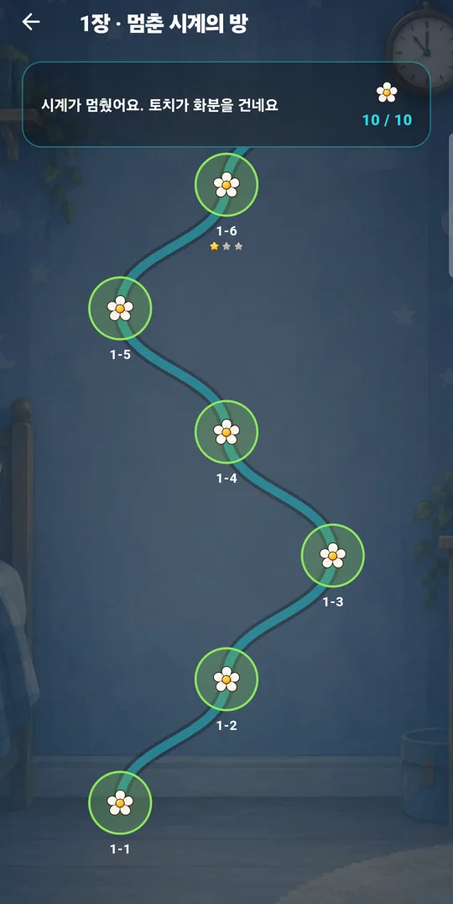
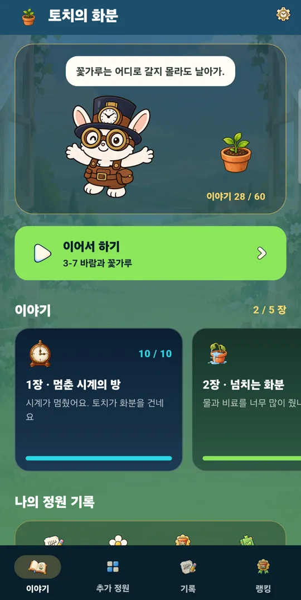
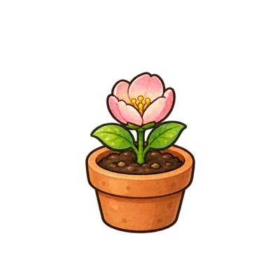
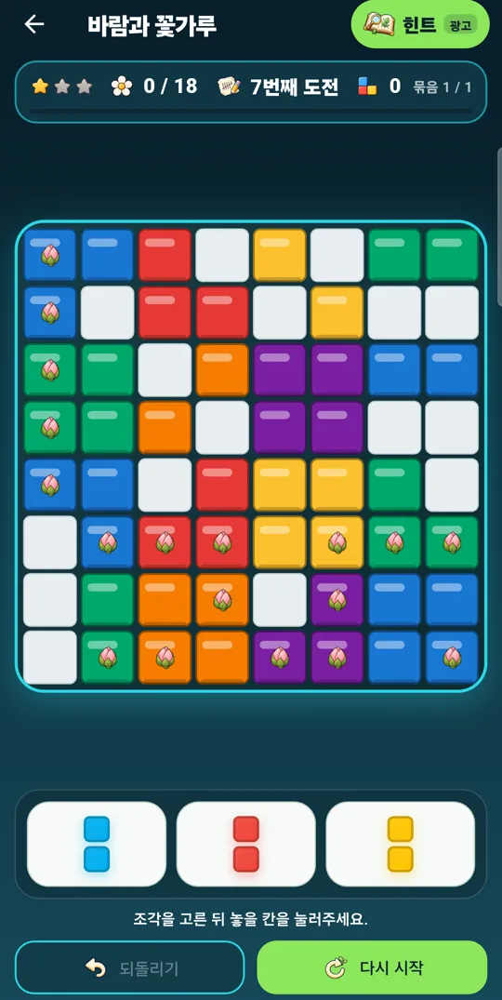
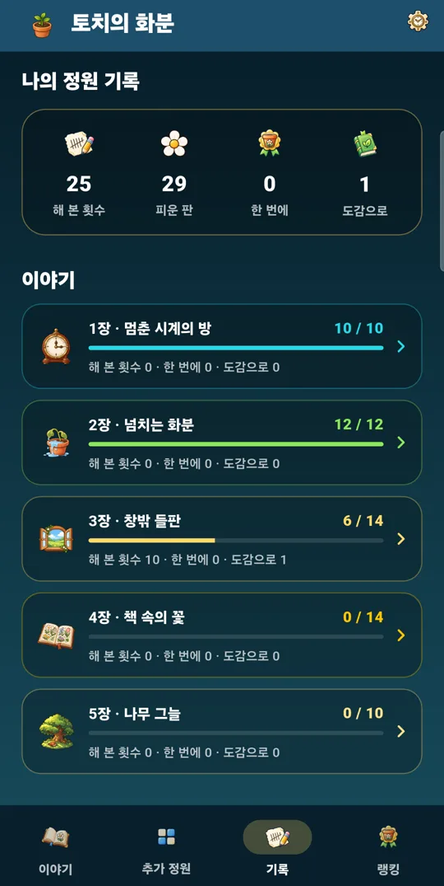

줄을 채우면 꽃봉오리가 활짝
8×8 보드의 꽃봉오리 칸이 지워지는 줄에 들어가면 꽃이 피어요. 판마다 주어진 조각으로 목표만큼 꽃을 피우면 성공이에요.
꽃을 피우는 블록 퍼즐
시계가 멈춘 방에서 토끼 토치가 화분 하나를 건네요. 블록으로 줄을 채우면 꽃봉오리가 활짝 피고, 해 본 만큼 물방울이 모여 화분 속 씨앗이 자라요. 실패한 횟수가 아니라 해 본 횟수로 남는 퍼즐이에요.



이렇게 놀아요
조각 세 개를 보드에 놓아 가로줄이나 세로줄을 채우면 그 줄이 지워지면서 꽃이 펴요. 정답은 하나가 아닐 수도 있지만, 막히면 다시 해 보면 돼요.
8×8 보드의 꽃봉오리 칸이 지워지는 줄에 들어가면 꽃이 피어요. 판마다 주어진 조각으로 목표만큼 꽃을 피우면 성공이에요.
3장부터는 한 줄을 지우면 바람이, 두 줄을 한 번에 지우면 꽃가루가, 세 줄 이상이면 무지개 꽃이 생겨요. 바람은 한 줄을 쓸고, 꽃가루는 주변 3×3을 터뜨리고, 무지개 꽃은 같은 색을 모두 지워요. 이어서 터뜨리면 연쇄가 돼요.
세 번째 도전부터 도감이 다음 수 하나를 짚어 줘요. 지금 판에서 길이 없으면 필요한 만큼 되돌린 뒤 알려 줘요.
판마다 몇 번째 도전인지, 되돌리기와 걸린 시간이 기기에 남아요. 한 번에 깬 판에는 ‘한 번에!’ 도장이 찍혀요.
도감 없이 끝까지 피운 판의 도전 횟수를 더해 순위를 매겨요. 판마다 20번까지만 세요. 빨리 깬 사람보다 끝까지 해 본 사람이 위에 올라가요.
도전할 때마다 물방울이 모여요. 물방울로 씨앗을 교환해 화분에 심으면 판을 깰 때마다 자라서 꽃이 피어요. 어떤 꽃일지는 피어 봐야 알아요.
이야기 판을 처음 피울 때마다 그 장의 장면 그림이 한 조각씩 열려요. 장을 다 깨면 그림이 완성되고 토치의 한마디가 남아요.
이야기 5장
계획만 세우다 시계를 멈춰 버린 아이에게 토치는 말해요. “씨앗은 계획표를 못 읽어. 일단 심어 봐.” 판을 깰 때마다 장면 조각이 하나씩 열리고, 장을 다 깨면 다음 장으로 넘어가요.
시계가 멈췄어요. 토치가 화분을 건네요
물과 비료를 너무 많이 줬나 봐요
창밖을 보다가 들판으로 나가요
집에 돌아와 책에서 꽃을 찾아봐요
시계를 돌려받았지만 보지 않아요
추가 정원 · 목록마다 100판
한 판은 이렇게
조각은 끌어다 놓아도 되고, 조각을 고른 뒤 칸을 눌러도 돼요.
토치의 한마디와 함께 지난번 판부터 바로 이어가요.
길을 따라 한 판씩 꽃을 피워요. 별은 판의 난이도예요.

몇 번째 도전인지 보면서, 막히면 힌트를 펼쳐요.

해 본 횟수와 피운 판이 장별로 쌓여요.
게임 기록은 기기에 저장돼요. 월드 랭킹에는 익명 ID와 닉네임, 국가 코드, 점수만 올라가고, 기록 탭에서 지울 수 있어요. 광고는 Unity Ads가 보여 줘요. 목록 화면 아래와 플레이 화면 위에 배너가 있고, 힌트를 펼칠 때 전면 광고가 나와요.